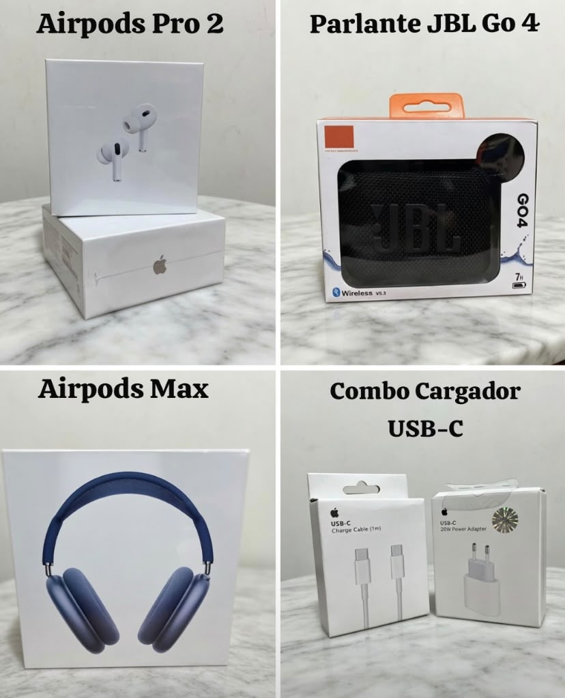

📦 Publicidad

📸 Cuenta de negocios: @herbyn1
📸 Mis socios: @La mejor tienda de Argentina
Cosas electrónicas de calidad.

📸 Cuenta de negocios: @herbyn1
📸 Mis socios: @La mejor tienda de Argentina
Cosas electrónicas de calidad.

Club Brugge es el club más importante y exitoso de Bélgica. Dominó el fútbol belga durante décadas y fue uno de los primeros equipos del país en competir regularmente al máximo nivel europeo.
🌍 Mejor actuación europea: Finalista de la Copa de Europa 1978 y de la Copa UEFA 1976.
Pese a haber llegado a dos finales continentales, nunca pudo conquistar un trofeo UEFA.

Uno de los clubes más históricos de España. Su política de utilizar principalmente jugadores vascos lo convirtió en una institución única en el fútbol mundial.
🌍 Mejor actuación europea: Finalista de la Copa UEFA 1977 y de la Europa League 2012.
A pesar de su enorme prestigio y sus títulos nacionales, sigue sin levantar un trofeo continental.

Fenerbahçe es uno de los gigantes del fútbol turco y cuenta con una de las aficiones más numerosas del mundo.
🌍 Mejor actuación europea: Semifinalista de la Champions League 2008.
Ha protagonizado campañas históricas, pero nunca llegó a una final UEFA.

Durante muchos años fue el club más exitoso de Francia. Su época dorada llegó entre los años 60 y 70.
Ganó 10 ligas francesas y se convirtió en un símbolo del fútbol francés.
🌍 Mejor actuación europea: Finalista de la Copa de Europa 1976.
Estuvo a solo un partido de conquistar Europa, pero cayó ante el Bayern Múnich.

Histórico club vasco que logró conquistar dos ligas españolas consecutivas en los años 80.
🌍 Mejor actuación europea: Semifinalista de la Copa de Europa 1983.
Siempre fue un rival respetado en España y Europa.

Uno de los clubes más populares de España gracias a sus hinchas y su identidad futbolística.
🌍 Mejor actuación europea: Finalista de la Conference League 2025 pero la perdieron vs Chelsea.
Todavía busca conquistar el primer título continental de su historia.

Uno de los tres grandes del fútbol turco y uno de los clubes más tradicionales del país.
🌍 Mejor actuación europea: Cuartos de final de la Champions League.
A pesar de numerosos intentos, nunca logró disputar una final UEFA.

Histórico club italiano recordado por el legendario Grande Torino, considerado uno de los mejores equipos de la historia de Italia.
🌍 Mejor actuación europea: Finalista de la Copa UEFA 1992.
Perdió aquella final ante el Ajax y desde entonces sigue buscando su primer título continental.

Uno de los clubes históricos de Francia y varias veces campeón nacional.
🌍 Mejor actuación europea: Cuartos de final de la Copa de Europa.
Nunca logró alcanzar una final continental pese a su rica historia.

Montpellier protagonizó una de las mayores sorpresas del fútbol francés al conquistar la Ligue 1 en 2012.
🌍 Mejor actuación europea: Participaciones en Champions League y competiciones UEFA sin alcanzar semifinales.
Aunque su historia internacional es más modesta que la de otros clubes de esta lista, sigue siendo una institución reconocida en Francia.
Club Brugge, Athletic Club, Saint-Étienne y Torino estuvieron muy cerca de conquistar Europa al alcanzar finales continentales.
Fenerbahçe, Real Sociedad, Betis, Beşiktaş, Nice y Montpellier también protagonizaron campañas destacadas, pero nunca lograron ganar un torneo UEFA oficial.
Todos ellos forman parte del grupo de clubes históricos y reconocidos que aún persiguen el sueño de levantar su primer trofeo europeo.